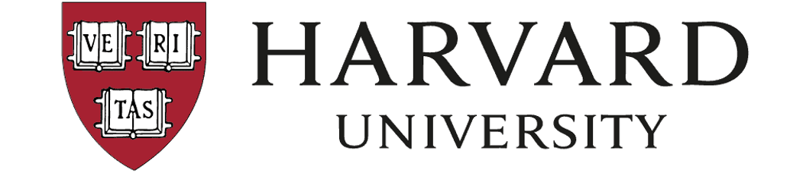
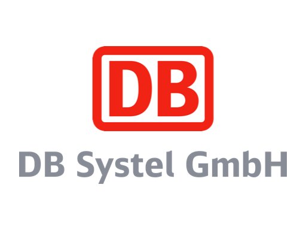
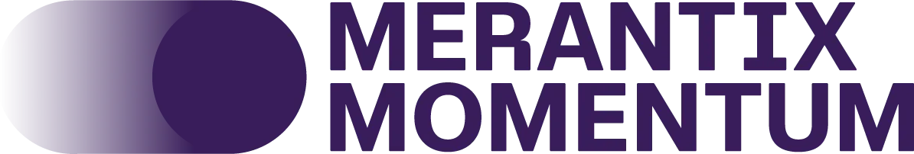
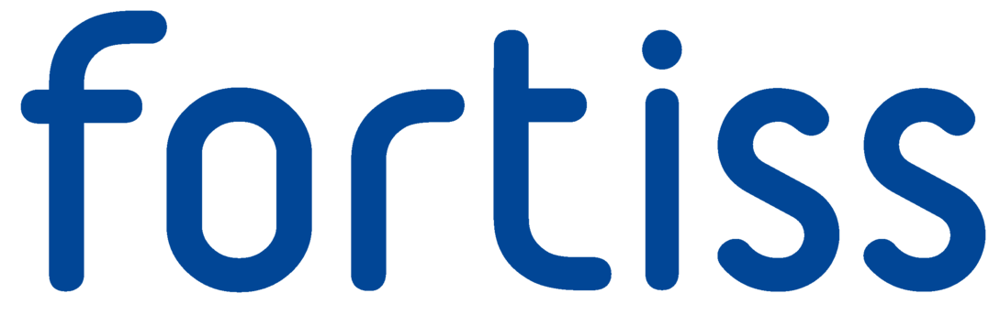
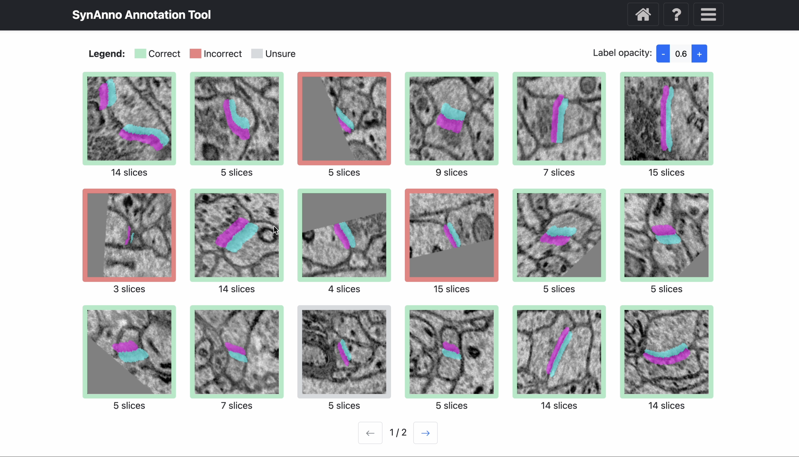
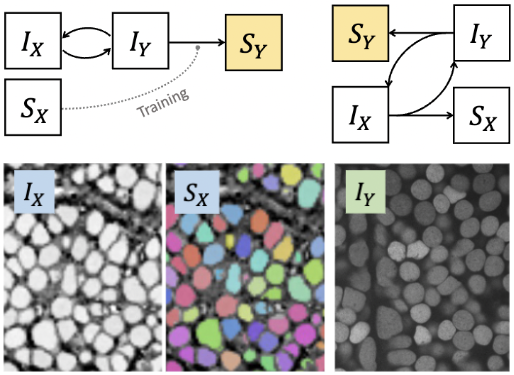
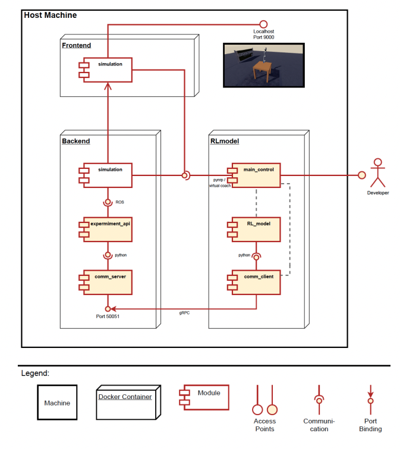
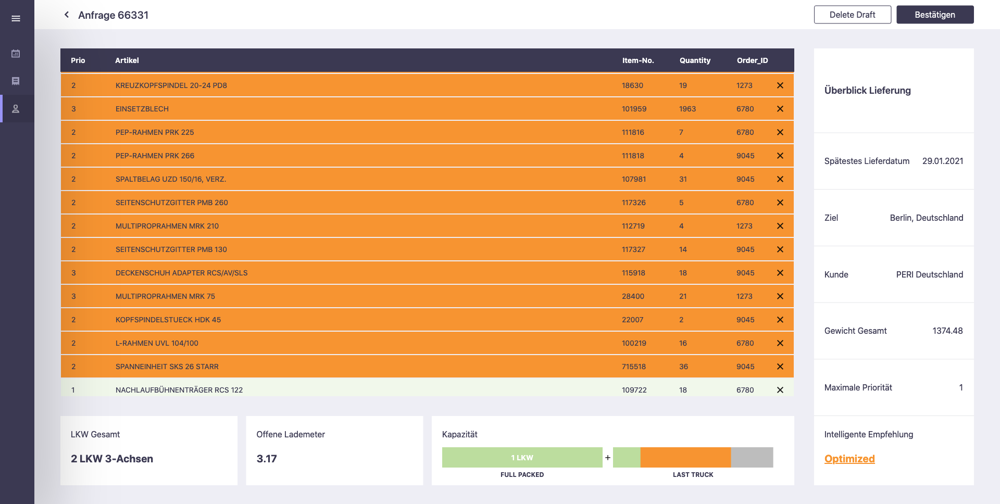
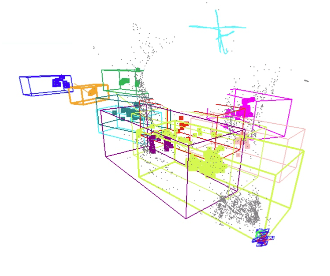

I am a researcher and developer with a strong foundation in
artificial intelligence, focused on building open and impactful
solutions that bridge science and engineering. I hold both a
B.Sc. in
Engineering Science
and an M.Sc. in
Robotics, Cognition, and Intelligence
from the Technical University of Munich (TUM). During my
Bachelor's, I worked as a student researcher at the national
research institute fortiss, where I also wrote my Bachelor's thesis. Afterward, I joined
deevio as a Data Scientist,
then moved to Predicpro (now
Stryza), a
WATTx venture, as Technical
Project Lead and Integrated Systems Engineer. While completing
my M.Sc., I gained further experience at
Agile Robots AG in
software and perception. For my Master's thesis, I was invited to
Harvard's
Visual Computing Group (VCG)
as a Research Fellow, where I developed
CySGAN, a 3D domain adaptation and instance segmentation method for
neurobiology, published in IEEE JBHI 2023. After returning from
the US, I joined
Merantix Momentum
as a Research Software Engineer, building scalable MLOps
infrastructure and CI/CD pipelines for safety-critical ML, and
then spent two and a half years as a Senior Specialist for AI
& Software at DB Systel, leading core logic development in a large-scale R&D
project on train dispatching automation and delay mitigation.
Alongside that role, I returned to the VCG as a Research
Affiliate to lead the development of
SynAnno, an interactive proofreading tool for synaptic annotations,
which I presented at IEEE VIS 2025 in Vienna and which received
the
Graphics Replicability Stamp. I am now a first-year PhD student in the Visual Computing
Group at Harvard University.
Research
I work on accelerating neuroscientific discovery through
open-source tools for scalable connectomics, and on advancing 3D
segmentation for emerging image modalities and
annotation-scarce settings. My methodological focus is
structurally consistent domain adaptation, cross-domain
pretraining, and semi-supervised learning — paving the way
toward connectomics foundation models.
Education
Ph.D. Computer Science, Harvard University,
2026–Present Visual Computing Group, advised by Prof. Hanspeter
Pfister
M.Sc. Robotics, Cognition, Intelligence, Technical
University of Munich, 2019–2022 Thesis: "3D Instance Segmentation of an Unlabeled Modality
via Cyclic Segmentation GANs"
B.Sc. Engineering Science, Technical University of
Munich, 2014–2018 Thesis: "Energy-based Condition Monitoring for Industry
4.0"
Experience

PhD Student | Visual Computing Group, Harvard
University Sep 2026 – Present. Advisor:
Prof. Hanspeter Pfister
Researching open-source tooling for scalable connectomics
and 3D segmentation for emerging image modalities and
annotation-scarce settings.

Senior Specialist for AI & Software | R&D
Project KIDispo, DB Systel Dec 2023 – Jun 2026
I designed and led the implementation of core logic
components for a national R&D project automating train
dispatching across Germany's rail network, covering
simulation, disruption handling, and delay mitigation, and
supporting national rollout and operation.
Research Affiliate | Visual Computing Group, Harvard
University Nov 2024 – Jun 2025 (alongside DB Systel).
Advisor:
Prof. Hanspeter Pfister
Designed SynAnno, an interactive tool for neuron-centric
proofreading, integrating guided workflows, path planning,
3D visualization, and ML-based error correction. Published
at IEEE VIS 2025 and awarded the Graphics Replicability
Stamp.

Research Software Engineer | Research Team, Merantix
Momentum Feb 2023 – Jun 2023. Mentor:
Dr. Johannes Otterbach
Mr. Lauenburg is distinguished by his excellent
team-oriented work ethic, outstanding communication
skills, and very high flexibility. - Dr. Johannes
Otterbach
Research Fellow | School of Engineering and Applied
Sciences, Harvard University Oct 2021 – Jul 2022. Advisor:
Prof. Hanspeter Pfister
We would like to strongly recommend him [Leander] for any
academic programs or industry positions without
reservation. - Prof. Hanspeter Pfister
Working Student | Department for Perception and
Software Development, AgileRobots Nov 2020 – Jun 2021. Mentor:
Patrick Schulte
Leander has been an exceptional dedicated and driven team
member who consistently demonstrated his highly efficient
and independent work style. - Patrick Schulte
Entrepreneur in Residence (Tech Lead) | Stryza
(formerly Predicpro), WATTx May 2019 – Oct 2019. Mentor:
Dr. Martin Mittermeier
Leander's work laid the new foundation for Predicpro [Stryza] for which we are entirely grateful. His vision and
hard-work ultimately resulted, among other things, in a
pilot project with a DAX listed company." - Dr. Martin
Mittermeier
Data Scientist Intern | Engineering Team, deevio
Nov 2018 – May 2019. Mentor:
Dr. Tassilo Glander
We would like to highlight Leander's versatility and
independent working style, as he proactively identified
and resolved issues related to his current tasks. - Dr.
Tassilo Glander

Working Student | Smart Energy Team, fortiss Jun 2017 – Sep 2018. Mentor:
Dr. Markus Duchon
Mr. Lauenburg shows an extraordinary level of commitment,
an exceptional willingness to perform, and a great
eagerness to learn. - Dr. Markus Duchon
Projects

SynAnno: Interactive Guided Proofreading of Synaptic
Annotations Leander Lauenburg, Jakob Troidl, Adam Gohain, Zudi
Lin, Hanspeter Pfister, Donglai Wei
(IEEE VIS, 2025)
SynAnno introduces a structured and intuitive approach to
proofreading synapses in connectome datasets. I began
developing it as a Research Fellow at Harvard
University's Visual Computing Group and completed it as a
Research Affiliate, alongside my full-time industry role.
The work received the Graphics Replicability Stamp for
reproducibility of results and commitment to open science.
CodePreprintIEEE VISReplicability Stamp

3D Domain Adaptive Instance Segmentation via Cyclic
Segmentation GANs Leander Lauenburg*, Zudi Lin*, Ruihan Zhang, Márcia
dos Santos, Siyu Huang, Ignacio Arganda-Carreras, Edward S.
Boyden, Hanspeter Pfister, Donglai Wei
(IEEE JBHI, 2023) *equal contribution
The paper '3D Domain Adaptive Instance Segmentation via
Cyclic Segmentation GANs', is available via open access in
the IEEE Journal of Biomedical and Health Informatics. The
paper is the result of my Master's thesis written during my
research stay with the Visual Computing Group at
Harvard. Research CodeProduction CodeIEEE JBHIMaster's Thesis

Reinforcement Learning for Solving Robotic Reaching Tasks
in the Neurorobotics Platform
Márton Szep, Leander Lauenburg, Kevin Farkas, Xiyan
Su, Chuanlong Zang (HBP Student Conference, 2022)
The paper is my team's contribution to the master course
"Cloud-Based Machine Learning in Robotics" (grade 1.0). I
presented the work at the 6th Human Brain Project Student
Conference.
CodearXiv PaperConference Abstract

PackLog Solutions: Estimation Tool for Streamlining
Logistic Operations
Franz Schubart, Leander Lauenburg, Lukas Pries
Marcel, Perez San Blas (First Place in TechChallenge BEFIVE, Innovation
Challenge by
UnternehmerTUM, 2021)
In close collaboration with our industry partners, we
developed an MVP for streamlining planning and communication
processes between the various players in the logistics of
large manufacturers.
CodeVideo

ELA - Object SLAM Leander Lauenburg, Andy Chen, Ezgi Cakir
The work is my team's contribution to the master course
"Advanced Topics in 3D Computer Vision" (grade 1.0). It is
an extension of
CubeSLAM: Monocular 3D Object SLAM, IEEE Transactions on
Robotics 2019, S. Yang, S. Scherer. In addition to cleaning up, streamlining, and dockerizing
CubeSLAM, we improved the work by adding dynamic object
filtering, object class-dependent scaling, and embedding
stream enrichments.
Code